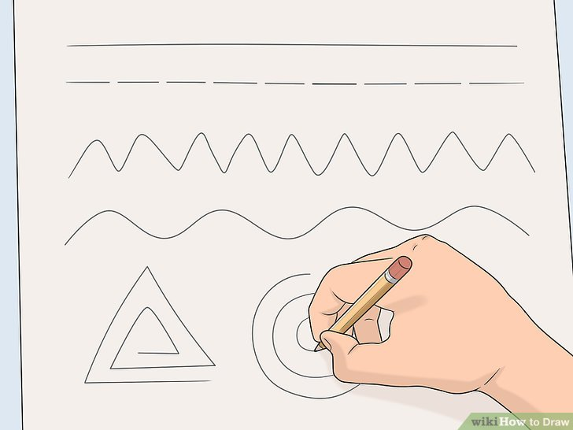

Learning how to draw can seem daunting, especially when you look at masterpieces by your favorite artists. However, it's important to remember that even the great masters were beginners once. Start by practicing some basic drawing techniques, then move on to more complex drawings to capture people, landscapes, animals, and more. If you keep at it, you'll likely be surprised at how quickly your drawing skills improve!
Method 1: How to Practice General Drawing Techniques
-

- Start by drawing basic lines and curves. If you're just learning to draw, start by carefully drawing the pencil over the page in a straight line. Practice holding your hand at different angles to see what gives you the most control over the pencil, along with what feels most comfortable. Once you feel comfortable drawing a straight line, practice rotating your wrist as you draw, which should create a curve. Try making a series of big loops on the paper, then draw tiny swirls below that. This will help you build up your hand-eye coordination so you can create the effects you want on the page.
- Practice drawing lines of different lengths, thicknesses, and textures. Try to produce wavy lines, zig-zag lines, and tangled, scribbly lines.
- After you get comfortable with lines and curves, try drawing shapes. For instance, you might try filling a page with two-dimensional shapes such as circles, squares, or triangles. For more information on drawing a straight line, check out How to Draw Neat Lines.
- Create a sense of depth by shading in a shape. Draw a simple shape, such as a circle, and add an imaginary light source to your page. Use a pencil to lightly shade in the areas farthest from your light source, while leaving the area closest to the light source unshaded. Keep building up the shading until you have a gentle fade you have a gradient from the darkest values at the parts of the object farthest from the light source to the lightest at the area closest to the light source.
- For instance, you might imagine that there's a lamp shining down from the top left corner of the page. In that case, the top-left area of your shape wouldn't have any shading. Just below that area, add light shading then progress to very dark shadows in the bottom right corner of your page.
- Try blending your shadows with your finger, an eraser, or a cloth to soften them.
- To learn more about shading, check out How to Shade Drawings. You can also read about more advanced shading techniques in How to Cross-Hatch and How to Stipple.
- Make an object seem grounded in reality by adding cast shadows. Picture your light source, then draw a shadow on the opposite side of the object from the light. The shadow should be the same shape as the object, although it may be longer or shorter than the object itself, depending on how far away the light source is and the angle of the light.
- For instance, if you have a bowl of fruit on a table, the table will cast a shadow on the floor, the bowl will cast a shadow on the table, and the fruit will cast a shadow inside the bowl.
- Use your finger or an eraser to blur the edges of the shadow so it looks more realistic.
- Check out How to Draw a Shadow to learn more!
- Draw a grid on the paper if you need help with proportions. If you're drawing something from a source image, draw several evenly-spaced vertical and horizontal lines on your paper to make a grid. Then, draw the same lines on your source image. Look at each individual square on the source image and copy it into the corresponding square on your paper. Your finished picture should be proportionate with the original!
- For instance, you might draw 3 vertical lines and 2 horizontal lines to make a 4x3 grid.
- It's okay if the squares aren't the same size on your source image as they are on your paper. You'll naturally adjust the size as you copy the picture you see in each grid. In fact, this technique is often used to resize a drawing.
- Show an object's dimension by learning perspective. To start practicing perspective, draw a horizontal line across your paper to represent the horizon. Make a small dot on the line. This will be your vanishing point. Next, draw two angled lines that meet at the vanishing point and stretch down toward the bottom of your paper. This can represent a road, a stream, railroad tracks, or any other pathway. The widest part of the path, near the bottom of the page, will seem closest to you, while the vanishing point will seem to be very far away.
-
- Perspective means that objects that are up close seem to be larger than objects that are far away. Simple perspective drawings only have one vanishing point, although more complex drawings might have two or even three.
- Understanding perspective will also help your shading and cast shadows look more realistic.
- Learn more by checking out How to Draw Perspective. You can also read How to Draw a 3D Box for another way to study the concept of perspective.

- Build an object out of different shapes. When you've mastered the art of drawing and shading basic shapes, you can draw much more complex objects by breaking them up into simpler shapes. Look at something you'd like to draw such as a human figure, a car, or your hand and try sketching out the basic shapes that make it up.
-
- You can practice by taking an image such as a photograph from a magazine or newspaper and outlining the different shapes directly on the image. For example, take a picture of a car and outline the rectangular shape of the windshield, the circular shapes of the tires, and so on.
- Once you've sketched out the shapes that make up your image, shade them in to create depth.
- To create a more finished drawing, connect the different shapes together with lines to build a coherent whole. You can then erase the outlines of the individual shapes that you sketched in.

- Try a contour drawing. Contour drawing is an exercise that helps you learn to create complex, realistic outlines. Pick an object to draw and follow the outlines of the image with your eye while drawing them at the same time. Try to keep your eye on the object you're drawing as much as possible, instead of concentrating on the hand that's doing the drawing. Don't worry if the drawing isn't perfect, just try to get the basic shape of whatever you're looking at onto the paper.
- Make a game of it by trying a continuous contour drawing. Try to connect all the outlines of what you see without lifting your hand from the page or going back over what you've already drawn.

- Outline your sketch first, then add details to keep your drawing proportionate. When you're taking a drawing from sketch to finished work, don't worry about the small details right away. Start by filling in basic shapes and values, then clean up your drawing and add details as you go. If you focus on intricate details too soon, you might make one part of your drawing too big or too small, and the work will feel out of balance when you're finished.
- For instance, if you're drawing a flower, you might start by sketching out the lines of the petals and stem. Once you've done that, you might start adding details like the center of the flower and the curves of the leaves and petals. Finally, you would add shading and any intricate details that are left.


Method 2: How to Draw People and Faces
- Sketch a large oval shape and a cross to draw a person's face up close. Draw an upside-down egg shape that's slightly narrower on the bottom and wider on the top. Then, lightly sketch a vertical and a horizontal line going through the oval.
- These lines will help you balance the proportions of the person's face. Draw them lightly, since you don't want them to show in the finished drawing.
- If you'd like to learn more, read How to Draw a Face.
- Use the lines to sketch the person's facial features. Draw the person's eyes along the horizontal line and place the nose about halfway between the eyes and the bottom of the chin. Sketch eyebrows above the eyes, then add the ears so that the bottoms of the ears line up with the bottom of the nose, and the tops of the ears line up with the eyebrows.
- Draw a circle on top of a trapezoid to make the silhouette of a head. If you're drawing a person from a little further away, the picture will look more realistic if you create the shape of a skull. To do this, draw a circle, then draw a narrow horizontal line a little below the circle. Create the jawline by sketching angled lines coming from the sides of the circle down to where they meet the horizontal line.
- Females tend to have a narrower chin, while males often have a wider jawline.
- You can still use the crossed directional lines from a close-up drawing to help you keep the proportion as you fill in the features of the person's face.
- Draw these lines lightly so they don't show in your finished drawing later.
- Draw a rounded rectangle and an oval to create the person's core. Just below the head, draw a long rectangle, which will be the person's torso. Make the rectangle very narrow for a slender person, or wider if the person is large. Then, sketch a horizontal oval overlapping the bottom of the rectangle. This will be the person's hips.
- If the person's neck will show in the picture, draw a narrow rectangle reaching from the person's head to their core.
- If the person is standing still, the rectangle should be perfectly up and down. If they're leaning slightly, tilt the rectangle a little, or tilt the rectangle dramatically to show that a person is bent over or in motion, like someone who's sprinting.
- Use straight lines and circles to sketch out the person's limbs. Use a straight line to represent each segment of the person's limbs, like their upper and lower arms and legs. Then, draw small circles anywhere that the person bends, such as their shoulders, knees, elbows, and wrists.
- Draw the lines and circles lightly since they're just meant to help you visualize the person's form. You'll erase them after you add detail to the drawing.
- Fill in clothing and other details once the person's body is sketched out. After you've drawn the person's figure, it's time to add detail. If you haven't already drawn the details of their face, you can do that now, along with features like their hair, clothing, and hands.
- Remember, the further away a person is, the less detail you need to include. Focus on silhouettes if you're drawing a large group of people.
- For more tips on filling in details, read How to Draw Clothing, How to Draw Realistic Hair, How to Draw Shoes, and How to Draw a Hand.
- Try gesture drawings to capture the essence of poses and actions. A gesture drawing is a basic sketch that captures both form and a sense of movement. Start by doing some very quick sketches (e.g., 30-60 seconds) with just a few simple lines to capture the shapes and movements that you see. Keep your lines loose, sketchy, and curved. The idea is to create something that looks dynamic and natural, not tidy and polished. [9]
- If you're drawing a human figure, try drawing a line through the center of the figure, going from the top of the head to the weight-bearing foot. Build the rest of the figure around it, sketching in other lines to indicate the angles of the hips and shoulders.
- Keep your hand moving, and don't worry about details or accuracy.


-
Imagine a line halfway between the bottom of the nose and the chin, then place the mouth on top of this line.
From here, you can fill in details like the person's eyelashes, pupils, and hair, along with shading and other details.
Erase the vertical and horizontal lines when you're finished.


Method 3: How to Capture Landscapes
- Use a reference photo or your own personal view. Find a photograph of a natural scene that you like, or look out the window and draw what you see. When you're drawing a landscape, it's often helpful to have some sort of reference to help you get your proportions right, especially when you're first starting out.
- Draw a horizontal line across your page for the horizon. The line that divides the ground and sky in a landscape picture is called the horizon line. Lightly sketch this line wherever you want your horizon to fall. Keep in mind that if your horizon features mountains, treetops, buildings, or other raised elements, it may not be a perfectly straight line.
- According to the Rule of Thirds, your picture will be more visually interesting if you place the horizon line a third of the way up from the bottom or a third of the way down from the top of the page.
- If you draw your horizon further up the page, the viewer will see more of the ground, and if you draw it further down, they'll see more of the sky.
- In a typical landscape picture, the paper is turned so it is wide, rather than tall.
- Add a focal point in your picture. To make your landscape drawing seem interesting, add some eye-catching object for the viewer to look at. This might be a tree, a building, some interesting rocks alongside a stream, a barn, a waterfall, a bench, a person, or anything else you can think of. Typically, the focal point is the largest element in a painting, although it may also be an object that stands out because of its color or contrast.
- For instance, a small patch of bright yellow flowers at the base of a stream would likely catch the viewers' eye if the rest of the colors in the painting are more sedate.
- A large shrub in the foreground of a painting could act as a focal point, as could a towering mountain in the background.
- It's helpful to try to find a reference photo or a natural angle with a focal point already included. However, you may need to select just a portion of a larger picture to make it interesting. For instance, you might focus your drawing on an area with an old tree, rather than trying to capture a whole park.
- Use perspective to maintain your proportions. When you're creating your drawing, imagine a vanishing point along your horizon line. Any lines in the picture should point back to this spot. This will mean that you draw elements in the foreground so they appear larger, while elements in the distance should be smaller.
- For instance, if you're drawing trees, the tops and bottoms of the trees in the foreground can stretch up to the edges of the paper, if you like. However, as trees recede into the background, the tops and bottoms should line up with an imaginary diagonal that angles in toward the vanishing point.
- Simplify the details in your drawing. When you're drawing a landscape, don't try to draw every leaf on a tree, every blade of grass, or every brick on a paved road. Instead, draw out the overall shape of an object, then add details to small sections to give the viewer the suggestion of texture and movement.
- For example, you might draw a few wispy lines to indicate that a fir tree is covered with needles.
- Some detail is okay, and this will vary depending on your style of drawing. If you're drawing a stony pathway, for instance, you might fill in the details of the rocks in the foreground of the picture, then gradually start spacing them out until you're only using a few circular shapes spaced along the path.
- If you are practicing a hyper-realistic drawing style, you may choose to include as many details as you can, and that's fine too. However, that's a more advanced drawing technique, so if you're just starting out, you might want to include just the details on your focal point, and let the rest of the picture be more simple.


Method 4: How to Try Other Basic Drawings
- Sketch a simple object from life. Once you have an idea of how to control your lines and create different values of light and dark, try drawing a real object or group of objects. Pick something relatively simple to start with, like a bowl of fruit, a flower, or a vase. Use a lamp to create a strong light source. Sketch in the outlines of what you see, then fill in the shadows and interior details.
- Try to really draw what you see rather than what you think the objects should look like. This is harder than it sounds! To do it, try outlining the negative spaces around and between the objects rather than the outlines of the objects themselves.
- These are called still-life drawings, and they are commonly used in art classes for practicing technique.
- Try your hand at drawing cartoons if you have a playful style. Cartoon drawings tend to be more simple than realistic drawings, but they also open the door for you to be more creative. You might draw yourself as a superhero, for instance, or you could draw a cartoon animal who goes on adventures. You could even practice drawing a character that already exists, like your favorite anime or comic-book hero.
- Focus on your main character first, then create different backgrounds, supporting characters, and props for your cartoon to interact with.
- Also, play with your character's facial expressions and pose to convey different emotions and actions.
- You can also create realistic-looking fantasy drawings from your own imagination. For instance, if you have a clear idea in your head of what a dragon would look like, you could try drawing that!
- For more tips, check out How to Draw Cartoon Characters or How to Draw Cartoon Animals.
- Draw a picture of your favorite animal to practice detail. Find a reference photo of an animal you really like and study its features before you start to draw. Then, start by sketching the outline of the animal. Once you've done that, fill in any major features, like its face, wings, or fins. Then, gradually add detail and shading until you're happy with the picture.
- Drawing animals can be hard! Pay attention to light and shadows if you want to make your picture look realistic, or emphasize the animal's most notable features if you want a more cartoonish drawing.
- Check out How to Draw Animals for a more in-depth look. If you want to draw a specific animal, try reading an article like How to Draw a Dog, How to Draw a Cat, How to Draw a Lion, How to Draw a Fish, or How to Draw a Bird.


Tips
- Don't be discouraged if you can't get your ideas down on paper right away. Drawing takes a lot of practice, so keep at it!
Back to top